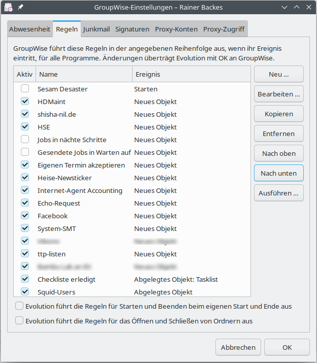
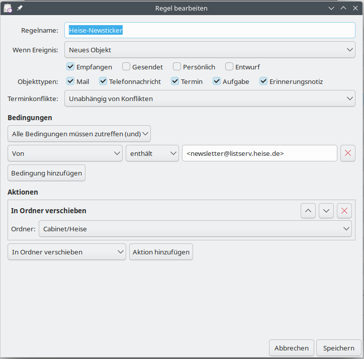
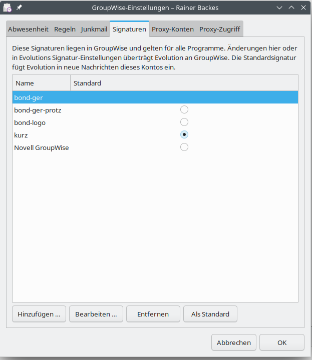
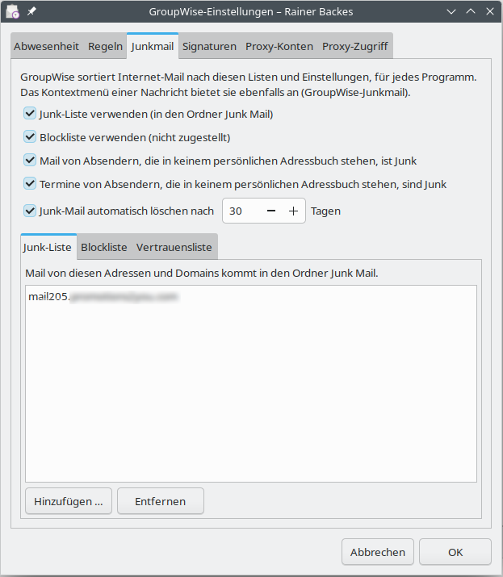

GroupWise-Postfächer in Evolution: E-Mail, Adressbücher, Kalender, Aufgaben und
Notizen über die SOAP-Schnittstelle des GroupWise Post Office Agent.
Version 0.9.0 · Oktober 2026
bond Software Entwicklung GmbH
Lizenz: GNU Lesser General Public License 2.1 oder neuer
1 Überblick
evolution-groupwise bindet GroupWise-Postfächer direkt in das E-Mail- und Groupware-Programm
Evolution ein. Es spricht mit dem GroupWise Post Office Agent (POA) über dessen SOAP-Schnittstelle,
also auf dem gleichen Weg wie GroupWise Web. Ein zusätzlicher Dienst oder Umweg über IMAP ist nicht nötig.
Mit einer einzigen Anmeldung stehen zur Verfügung:
E-Mail: alle Ordner des Postfachs, lesen und schreiben, verschieben, kopieren, löschen,
Entwürfe, Senden über GroupWise – die Empfänger erhalten eine echte GroupWise-Nachricht.
Adressbücher: das GroupWise-Adressbuch (nur lesen), „Häufige Kontakte“ und die persönlichen
Adressbücher (lesen und schreiben), mit Autovervollständigung beim Schreiben.
Kalender: Termine, ganztägige Termine, Serien, Erinnerungen, Besprechungen mit Einladungen und
Antworten, Frei/Belegt-Suche; die eigenen Unterkalender, Proxy-Kalender und für Sie freigegebene
Kalender als eigene Kalender.
Proxy-Zugriff: Postfächer anderer Benutzer, die Ihnen Proxy-Rechte gegeben haben, als eigene
Konten neben Ihrem – Mail, Kalender, Aufgaben, Notizen und Adressbücher, lesen und in deren Namen
schreiben; und die Verwaltung, wer auf Ihr eigenes Postfach zugreifen darf.
Aufgaben und Notizen aus dem GroupWise-Kalender.
Kategorien von GroupWise als Beschriftungen (E-Mail) und Kategorien (Kalender).
Voraussetzungen
Komponente
Anforderung
Evolution und evolution-data-server
3.52 oder neuer (z. B. openSUSE Leap 16,
openSUSE Tumbleweed, Ubuntu 24.04, aktuelles Fedora). Die Funktion „Wiederherstellen“ im Papierkorb
benötigt Evolution 3.56.
GroupWise
Post Office Agent mit aktiver SOAP-Schnittstelle (Standardport 7191);
entwickelt und getestet mit GroupWise 26.2.
Zugangsdaten
GroupWise-Benutzer-ID und Passwort.
2 Installation
Installation aus einem Paket
Für openSUSE und Fedora gibt es RPM-Pakete, für Debian und Ubuntu ein .deb-Paket. Installieren Sie
das Paket mit der Paketverwaltung Ihres Systems, zum Beispiel unter openSUSE:
Das Paket evolution-groupwise-lang enthält die deutsche Übersetzung (zurzeit; weitere Sprachen folgen). Starten Sie danach
Evolution und die Hintergrunddienste neu, am einfachsten durch Ab- und Anmelden oder mit:
evolution --force-shutdown
Aus den Quellen bauen
Für Entwickler und zum Testen lässt sich das Modul mit CMake bauen und ohne Administratorrechte in das
Heimatverzeichnis installieren. Die Befehle dafür stehen in der Datei README.de.md
der Quellen. Eine solche Entwicklerinstallation muss vor der Installation eines Pakets wieder entfernt
werden, sonst lädt Evolution jedes Modul doppelt.
3 Konto einrichten
Wählen Sie in Evolution Datei → Neu → E-Mail-Konto.
Geben Sie Ihren Namen und Ihre E-Mail-Adresse ein.
Wählen Sie als Servertyp GroupWise. Server, Port (7191) und Benutzername werden aus der
E-Mail-Adresse vorbelegt: aus benutzer@firma.de wird der Benutzer benutzer auf dem Server
mail.firma.de. Korrigieren Sie die Werte, wenn Ihre GroupWise-Benutzer-ID oder der POA anders
heißen.
Schließen Sie den Assistenten ab und geben Sie beim ersten Verbinden Ihr Passwort ein. Evolution
kann es im Schlüsselbund speichern.
Eine Seite für den Postausgang gibt es nicht: Nachrichten werden über GroupWise selbst versendet.
Das Konto erscheint anschließend in der E-Mail-Ansicht, und seine Adressbücher, Kalender, Aufgaben- und
Notizlisten stehen unter der Überschrift des Kontos in den jeweiligen Ansichten.
Zertifikat des POA
GroupWise stellt die Zertifikate seiner Agenten meist mit einer eigenen, internen Zertifizierungsstelle
(CA) aus, der Linux zunächst nicht vertraut. Evolution fragt deshalb beim ersten Verbinden, wie der
GroupWise-Client auch, ob es dem Zertifikat des POA vertrauen soll. Prüfen Sie die angezeigten Angaben und
wählen Sie Dauerhaft akzeptieren; die Zustimmung gilt für das ganze Konto mit seinen
Kalendern und Adressbüchern. Wird das Zertifikat des POA später erneuert, fragt Evolution einmal neu –
ebenfalls wie der GroupWise-Client.
Das Zertifikat muss auf den Namen ausgestellt sein, unter dem Sie den POA ansprechen (zum Beispiel
mail.example.com); sonst lehnt Evolution die Verbindung trotz Zustimmung als unsicher ab.
Für Administratoren: Ist die CA des GroupWise-Systems bekannt, entfällt auch die
Rückfrage nach einer Erneuerung. Legen Sie die CA-Datei (PEM)
für alle Benutzer eines Rechners nach /etc/pki/trust/anchors/ (openSUSE) bzw.
/usr/local/share/ca-certificates/ (Debian/Ubuntu) und führen Sie
sudo update-ca-certificates aus, oder
nur für einen Benutzer nach ~/.config/evolution-groupwise/ca/.
Der POA liefert die CA nicht mit, wohl aber der GroupWise-Administrationsdienst (Port 9710) in seiner
Zertifikatskette. Vergleichen Sie vor dem Einsetzen den Fingerabdruck mit dem in der
GroupWise-Administration:
Unter Bearbeiten → Einstellungen → E-Mail-Konten → Bearbeiten finden Sie:
Option
Bedeutung
Den Server alle … Sekunden nach Änderungen im Postfach fragen
GroupWise notiert auf
Wunsch, was im Postfach geschieht: neue, gelesene, verschobene und gelöschte Nachrichten. Mit dieser
Option fragt Evolution diese Liste im eingestellten Abstand ab (Vorgabe 60 Sekunden, mindestens 15)
und gleicht nur die betroffenen Ordner ab. Neue Nachrichten und alles, was Sie im GroupWise-Client
oder am Mobilgerät tun, erscheinen dann innerhalb dieses Abstands statt erst beim nächsten Abruf
des ganzen Kontos; die Abfrage selbst ist klein. Besonders bei Proxy-Konten spart das Zeit. Der
gewohnte Abruf bleibt zusätzlich bestehen. Die Option gilt auch für Kalender, Aufgaben und
Notizen des Kontos: Termine, die Sie im GroupWise-Client oder am Mobilgerät anlegen, ändern
oder löschen, und eingehende Einladungen erscheinen innerhalb des Abstands statt erst beim
nächsten Abgleich der Kalender (alle 15 Minuten). Aus, solange Sie es nicht einschalten; schalten Sie es
wieder aus, entfernt Evolution die Notizen aus dem Postfach. Ihre Proxy-Konten (Abschnitt 4.8)
übernehmen diese Einstellung von Ihrem eigenen Konto, auch den Abstand: Sie stellen sie nur dort
ein.
Der Server meldet Änderungen sofort, an Port … dieses Rechners
Zusätzlich zur Abfrage
oben: GroupWise meldet sich von selbst bei Evolution, sobald im Postfach etwas geschieht; neue
Nachrichten erscheinen dann nach ein bis zwei Sekunden. Dazu baut der GroupWise-Server (POA) eine
Verbindung zu Ihrem Rechner auf, an den angegebenen TCP-Port (Vorgabe 5221). Das
funktioniert nur, wenn der Server Ihren Rechner erreicht – im Firmennetz, nicht hinter einem
Heimrouter –, und wenn die Firewall Ihres Rechners den Port hereinlässt. Stellt Evolution fest,
dass die Meldungen nicht ankommen, fragt es, ob es den Port in der Firewall öffnen soll
(Port öffnen, Nicht jetzt,
Nicht mehr fragen); das System fragt dafür nach dem
Administrator-Passwort. Ohne ankommende Meldungen gilt einfach der Abstand der Abfrage oben. Nach dem Einschalten oder
Ändern einer der beiden Optionen dauert es einige Minuten, bis der Server auch Nachrichten von
außen und Aktionen im GroupWise-Client sofort meldet. Nur
zusammen mit der Abfrage wählbar; aus, solange Sie es nicht einschalten. Auch diese Einstellung
übernehmen Ihre Proxy-Konten.
Filter und Junk-Prüfung auf neue Nachrichten in der Mailbox anwenden
Evolutions eigene
Filterregeln und die Junk-Erkennung laufen über neu eingegangene Nachrichten. Dafür lädt Evolution
jede neue Nachricht vollständig; deshalb ist die Option ausgeschaltet, solange Sie sie nicht
brauchen.
Ordnerinhalte für den Offline-Betrieb lokal kopieren
Nachrichten werden vorab
heruntergeladen, damit sie auch ohne Verbindung lesbar sind.
Schreibgeschützt: nie etwas auf dem Server ändern
Evolution liest nur. Gelesen-Status,
Verschieben, Löschen und Senden werden nicht auf den Server übertragen – nützlich zum
Ausprobieren.
Regeln für Starten und Beenden beim Start und Ende von Evolution ausführen
Siehe Abschnitt
„Regeln“: Evolution lässt GroupWise die Regeln mit dem Ereignis Starten bzw. Beenden
ausführen. Aus, solange Sie es nicht einschalten.
Regeln für das Öffnen und Schließen von Ordnern ausführen
Ebenso für die Ereignisse
Ordner öffnen und Ordner schließen.
Mehrere Rechner am selben Postfach: Für die Abfrage der Änderungen legt Evolution im
Postfach einen Merkzettel an, der zu genau einem Rechner gehört; sein Name enthält eine Kennung des Rechners
(aus der Maschinen-ID des Systems) und Ihren Anmeldenamen. Greifen Sie von zwei Rechnern auf dasselbe
Postfach zu, hat jeder seinen eigenen – das funktioniert. Problematisch sind geklonte Rechner
(kopierte virtuelle Maschinen, ausgerollte Images): Sie haben dieselbe Maschinen-ID und nehmen sich
gegenseitig die Änderungen weg, sodass sie bei jedem nur zum Teil ankommen; auch die Sofort-Meldung geht dann
nur an einen von beiden. Geben Sie einem geklonten Rechner eine neue Maschinen-ID. Schalten Sie dazu
vorher die Option in Evolution aus (dann entfernt Evolution den alten Merkzettel aus dem Postfach), setzen Sie
als Administrator die Maschinen-ID neu, starten Sie den Rechner neu und schalten Sie die Option wieder ein:
Die Maschinen-ID verwenden auch andere Teile des Systems; setzen Sie sie am besten gleich nach dem Klonen
neu, noch bevor Sie Evolution einrichten.
GroupWise-Einstellungen
Einstellungen, die der GroupWise-Server selbst für Ihr Postfach hält, bearbeiten Sie im Fenster
GroupWise-Einstellungen: Klicken Sie in der Ordnerliste mit der rechten Maustaste auf den Namen des
GroupWise-Kontos und wählen Sie GroupWise-Einstellungen …. Das Fenster liest die
Einstellungen beim Öffnen vom Server und schreibt Ihre Änderungen mit OK zurück; sie
gelten dann für alle Programme, auch für den GroupWise-Client und GroupWise Web. Es hat die Registerkarten
Abwesenheit, Regeln (siehe unten), Junkmail (siehe Abschnitt 4.5), Signaturen
(siehe Abschnitt 4.2),
Proxy-Konten (siehe Abschnitt 4.8) und Proxy-Zugriff (siehe unten). Im
GroupWise-Client finden Sie dieselben Einstellungen im Menü Werkzeuge.
Bei einem Proxy-Konto (Abschnitt 4.8) zeigt GroupWise-Einstellungen … die
Abwesenheit und die Junk-Mail-Einstellungen des anderen Postfachs. Das setzt voraus, dass der andere
Benutzer Ihnen das Proxy-Recht „Einstellungen, Regeln und Ordner ändern“ gegeben hat; sonst meldet das
Fenster dies. Die Registerkarten „Proxy-Konten“ und „Proxy-Zugriff“ gibt es dort nicht.
Abwesenheit
Die Registerkarte Abwesenheit entspricht der Abwesenheitsregel des GroupWise-Clients:
Meine Abwesenheitsregel einschalten – solange die Regel eingeschaltet ist (und der Zeitraum
läuft, falls einer gesetzt ist), beantwortet GroupWise eingehende Mail automatisch, jeden Sender nur
einmal.
Nur in diesem Zeitraum – von und bis zu einem Tag (Ganze Tage) oder zu einer Uhrzeit.
GroupWise trägt für den Zeitraum einen Termin mit dem Status Abwesend in Ihren Kalender ein und
entfernt ihn wieder, wenn Sie die Regel ausschalten. Nach dem Ende des Zeitraums antwortet GroupWise
nicht mehr, auch wenn die Regel eingeschaltet bleibt.
Antwort – Betreff und Text der automatischen Antwort; der Betreff erscheint in Klammern hinter
dem Betreff der ursprünglichen Nachricht. Wahlweise wird die Nachricht des Senders in die Antwort
aufgenommen.
Externe Benutzer – ob auch Sendern außerhalb des GroupWise-Systems geantwortet wird, allen oder
nur Ihren Kontakten, mit einem eigenen Betreff und Text (der Text der Registerkarte „Antwort“ gilt für
sie nicht).
Regeln
Die Registerkarte Regeln entspricht Werkzeuge → Regeln im GroupWise-Client. GroupWise führt die
Regeln selbst aus, für alle Programme, in der Reihenfolge der Liste.

GroupWise-Einstellungen, Registerkarte Regeln
Liste: das Häkchen Aktiv schaltet eine Regel ein oder aus; Nach oben
und Nach unten ändern die Reihenfolge; Neu …,
Bearbeiten … (oder Doppelklick), Kopieren und
Entfernen wie gewohnt. Alle Änderungen überträgt Evolution mit
OK an GroupWise.
Ausführen … lässt GroupWise die gespeicherte Regel sofort auf die Objekte Ihres
Postfachs anwenden (nach einer Rückfrage), zum Beispiel eine benutzeraktivierte Regel.
Der Regel-Editor hat nicht ganz den Umfang des GroupWise-Clients, ist dafür aber deutlich einfacher zu
bedienen und sollte im Alltag ausreichen:

Der Regel-Editor
Ereignis: Neues Objekt (mit den Quellen Empfangen, Gesendet, Persönlich, Entwurf),
Abgelegtes Objekt, Ordner öffnen, Ordner schließen (jeweils für einen Ordner oder
jeden), Erledigtes Objekt, Starten, Beenden und Benutzeraktiviert.
Objekttypen: Mail, Telefonnachricht, Termin, Aufgabe, Erinnerungsnotiz; für Termine auch, ob die
Regel nur ohne oder nur bei einem Terminkonflikt greift.
Bedingungen: beliebig viele, verknüpft mit „Alle Bedingungen müssen zutreffen (und)“ oder
„Eine Bedingung muss zutreffen (oder)“ (eine Ebene, ohne verschachtelte Gruppen). Die Felder heißen wie
im GroupWise-Client:
Texte (enthält, enthält nicht, beginnt mit, entspricht, ist nicht): Von, An, CC, Betreff, Mein
Betreff, Nachricht, Ort, Anlagen, Anmerkung, Aufgegeben von, Konto, Name, Firma und
Telefonnummer des Anrufers;
Datumsangaben, verglichen mit heute plus einer Anzahl Tage (z. B. „vor heute plus −3“ =
älter als drei Tage): Erstellt, Zugestellt, Angefangen, Ende, Erledigen bis, In Auftrag gegeben
am, Abschlussdatum;
Zähler versendeter Objekte – Akzeptierte, Beantwortete, Erledigte, Gelöschte, Geöffnete Anzahl,
Empfänger gesamt – mit einer Zahl oder mit einem anderen Zähler (plus einem Zuschlag), etwa
„Erledigte Anzahl = Feld Empfänger gesamt“: alle Empfänger haben die Aufgabe erledigt;
Auswahlfelder: Priorität (Hoch, Standard, Niedrig), Kopieart (An, CC, BC), Status d. Nachricht
(Akzeptiert, Erledigt, Geöffnet, Gelesen, Privat), Erweiterter Status der Nachricht (Zustände der
Archivierung durch Drittanbieter), Thread-Zustand (Komprimiert, Beobachtet, Ignoriert),
Anlagenliste und Persönliche Anlagen (Datei, Audio, Film, Objekt (OLE), Dokumentverweis, Mail,
Termin, Job, Notiz, Tel. Nachricht), Erwähnt (ich), Sendeoptionen (Antwort erbeten).
Felder für Dokumente und Bibliotheken sowie X-Felder von Internet-Mails bietet der Editor nicht an.
Aktionen, in ihrer Reihenfolge: Mail senden, Weiterleiten, Als Anlage weiterleiten, Delegieren,
Antworten, Akzeptieren, Kategorie, Löschen/Ablehnen, Nachricht tilgen, In Ordner verschieben, Mit Ordner
verknüpfen, Als privat markieren, Als gelesen markieren, Als ungelesen markieren, Regelverarbeitung
beenden und zuletzt Unbedingt antworten (gefährlich).
Antworten und unbedingt antworten:Antworten ist die automatische Antwort von
GroupWise: sie antwortet jedem Absender höchstens einmal am Tag und vermeidet Nachrichtenschleifen.
Unbedingt antworten (gefährlich) ist deren Vorläufer und antwortet ohne jede Einschränkung auf jede
Nachricht – zwei solche Regeln, eine Mailingliste oder eine andere Abwesenheitsnotiz können sich endlos
gegenseitig antworten. Verwenden Sie sie nur, wenn Sie sie wirklich brauchen.
Regeln mit Bestandteilen, die der Editor nicht darstellen kann (verschachtelte Bedingungsgruppen,
Dokument- oder X-Felder, andere Aktionen wie Archivieren), zeigt er nur an; Sie können sie aber ein- und ausschalten, verschieben, ausführen und
entfernen. Bearbeiten Sie sie im GroupWise-Client.
Die Ereignisse Starten, Beenden, Ordner öffnen und Ordner schließen löst in
GroupWise der Client aus, nicht der Server. Mit den beiden Kontrollkästchen unter der Liste (auch in den
Kontooptionen) bestimmen Sie, ob Evolution das übernimmt: beim Start und Ende von Evolution bzw. beim Öffnen
und Verlassen eines Ordners. Beide sind anfangs aus – bedenken Sie, dass solche Regeln zum Beispiel Nachrichten
endgültig löschen können.
Proxy-Zugriff auf Ihr Postfach
Die Registerkarte Proxy-Zugriff entspricht dem Proxy-Zugriff in den Sicherheitsoptionen des
GroupWise-Clients: Sie legt fest, wer Ihr Postfach als Proxy öffnen darf und mit welchen Rechten.
Die Liste zeigt die Benutzer mit Zugriff; ganz oben steht Alle Benutzer, die Rechte für jeden im
GroupWise-System (typisch: Termine lesen, für die Frei/Belegt-Planung).
Benutzer hinzufügen … fragt nach der E-Mail-Adresse oder dem Namen eines
GroupWise-Benutzers; er bekommt zunächst das Recht, Mail und Termine zu lesen.
Benutzer entfernen nimmt ihm den Zugriff.
Für den ausgewählten Benutzer setzen Sie darunter die Rechte: Lesen und Schreiben für
Mail/Telefon, Termine, Erinnerungsnotizen und Aufgaben (Schreiben schließt Lesen ein), dazu
Meine Alarme abonnieren, Meine Benachrichtigungen abonnieren, Optionen, Regeln und
Ordner ändern, Als privat markierte Objekte lesen und Sicherheitsoptionen
ändern.
Mit OK überträgt Evolution die Änderungen an GroupWise.
4 E-Mail
4.1 Ordner und Nachrichten
Evolution zeigt alle Ordner des GroupWise-Postfachs, wie der GroupWise-Client zuerst die Systemordner
in seiner Reihenfolge – Mailbox, Ausgangsnachrichten, Jobliste, In Arbeit (Entwürfe), Junkmail, Papierkorb,
Aktenschrank mit allen Unterordnern –, darunter Ihre eigenen Ordner und die Suchergebnisordner nach
Namen. Die Systemordner tragen die Namen, die auch der GroupWise-Client in Ihrer Sprache zeigt. Legen Sie
in Evolution selbst eine Reihenfolge fest (Kontextmenü eines Ordners,
Sortierreihenfolge bearbeiten …), gilt diese. Freigegebene Ordner anderer Benutzer, deren übergeordneter Ordner nicht
mehr existiert, blendet Evolution wie der GroupWise-Client aus. Ordner lassen
sich anlegen, umbenennen, verschieben und löschen. Systemordner wie die Mailbox oder der Papierkorb
bleiben, wie sie sind.
Nachrichtenliste: Absender, Betreff, Datum, Größe, Anhangs-Symbol, Priorität und
Gelesen-Status kommen direkt aus GroupWise. Der Inhalt einer Nachricht wird erst beim Öffnen
geladen.
Originalnachricht: Von außen eingegangene Nachrichten zeigt Evolution so, wie sie ankamen,
mit allen Kopfzeilen.
Geänderter Betreff: Haben Sie den Betreff einer Nachricht im GroupWise-Client geändert,
zeigt Evolution den geänderten Betreff.
Gelesen/ungelesen wird in beide Richtungen abgeglichen. Das bloße Ansehen in der Liste
markiert nichts als gelesen.
Verschieben und Kopieren innerhalb des Kontos geschieht auf dem Server: Eine kopierte
Nachricht ist in GroupWise dieselbe Nachricht in einem weiteren Ordner.
Einladungen in der Mailbox erscheinen als Nachrichten; beantworten Sie sie in der
Nachrichtenansicht oder im Kalender. Beantwortete Einladungen verschwinden wie im
GroupWise-Client aus der Mailbox.
Evolution prüft regelmäßig auf neue Nachrichten. Zwischen zwei vollständigen Abgleichen (höchstens
alle 15 Minuten) fragt es nur die Änderungen seit dem letzten Mal ab.
4.2 Schreiben und Senden
Nachrichten werden über GroupWise versendet: Interne Empfänger erhalten eine native GroupWise-Nachricht,
externe eine normale E-Mail. Die gesendete Nachricht liegt danach in den Ausgangsnachrichten.
HTML und Text, eingebettete Bilder, Anhänge und die Priorität werden übernommen.
Entwürfe werden im Ordner In Arbeit gespeichert und sind so auch im
GroupWise-Client zu sehen.
Weiterleiten als Anhang: Leiten Sie eine GroupWise-Nachricht als Anhang weiter, hängt
GroupWise die Nachricht selbst an, wie der GroupWise-Client. Interne Empfänger sehen sie als
GroupWise-Nachricht und nicht als MIME-Datei.
Absender: Gesendet wird immer über das Konto, zu dem die gewählte Absenderidentität gehört.
Mehrere GroupWise-Konten nebeneinander sind möglich.
Zustellstatus und Zurückziehen
Wie im GroupWise-Client sehen Sie bei gesendeten Nachrichten, was bei den Empfängern damit geschah, und
können sie zurückziehen. Beides steht im Ordner Ausgangsnachrichten eines GroupWise-Kontos im
Kontextmenü einer Nachricht und im Menü Nachricht:
Zustellstatus … öffnet für die ausgewählte Nachricht ein Fenster mit allen
Empfängern (An, CC, BC) und darunter jedem Ereignis mit Zeitpunkt: zugestellt, geöffnet,
gelöscht, beantwortet, weitergeleitet, zurückgezogen, bei Terminen angenommen oder abgelehnt
(mit Kommentar) und weitere. Bei Empfängern außerhalb von GroupWise steht meist nur
„Übertragen“.
Neu senden … öffnet die Nachricht wie im GroupWise-Client in einem neuen
Nachrichtenfenster, in dem Sie sie ändern können. Die Signatur steht auf „Keine“, weil die
Nachricht ihre Signatur schon enthält. Beim Senden fragt Evolution,
ob die ursprüngliche Nachricht bei den Empfängern zurückgezogen werden soll:
Zurückziehen, Nicht zurückziehen oder
Abbrechen (zurück ins Nachrichtenfenster).
Zurückziehen … holt die ausgewählten Nachrichten nach einer Rückfrage aus
den Postfächern der Empfänger in GroupWise zurück. Die gesendete Nachricht bleibt in den
Ausgangsnachrichten; ihr Zustellstatus zeigt die Empfänger dann als „Zurückgezogen“. Empfänger
außerhalb von GroupWise haben die Nachricht bereits erhalten. Bei einem nur lesbaren Konto
fehlt der Eintrag.
Signaturen
Ihre Signaturen aus GroupWise stehen in Evolution zur Verfügung: im Feld Signatur:
des Nachrichten-Editors und unter Bearbeiten → Einstellungen → Editoreinstellungen →
Signaturen, mit Bildern. Die Standardsignatur von GroupWise fügt Evolution in neue Nachrichten des
Kontos ein, auch wenn GroupWise vor dem Senden fragen soll; im Editor wählen Sie eine andere oder „Keine“.
Die Signaturen eines Proxy-Kontos tragen den Namen des Kontos, etwa „Karl – Karl Napp (Proxy)“.
Signaturen bearbeiten Sie im Fenster GroupWise-Einstellungen, Registerkarte Signaturen:

GroupWise-Einstellungen, Registerkarte Signaturen
Hinzufügen … und Bearbeiten … öffnen Evolutions
Signatur-Editor; beim Speichern überträgt Evolution die Signatur an GroupWise.
Entfernen löscht die Signatur, auch in GroupWise.
Als Standard macht die ausgewählte Signatur mit OK zur
Standardsignatur in GroupWise und zur Signatur des Kontos in Evolution.
Auch Änderungen und Löschungen unter Editoreinstellungen → Signaturen überträgt
Evolution an GroupWise. Neue Signaturen, die Sie dort mit Hinzufügen anlegen, bleiben
dagegen nur in Evolution, weil sie keinem Konto zugeordnet sind. Änderungen im GroupWise-Client übernimmt
Evolution beim nächsten Verbinden des Kontos. Entfernen Sie ein ganzes Konto, bleiben seine Signaturen in
GroupWise erhalten.
Empfehlung: Nachrichten in HTML schreiben. Schreiben Sie im GroupWise-Client eine
einfache Nachricht, verwendet er ein eigenes, erweitertes Textformat, das noch aus den Anfängen von GroupWise
stammt. Dieses Format kann Evolution nicht verarbeiten; eine Nur-Text-Nachricht ist bei Evolution daher
wirklich nur Text. Sinnvoller ist das HTML-Format, der heutige Standard für E-Mail. Stellen Sie unter
Bearbeiten → Einstellungen → Editoreinstellungen die Auswahl
Nachrichten formatieren als auf HTML. Dann fügt Evolution die Signatur mit
Formatierung und Bildern ein, so wie GroupWise sie speichert. Schreiben Sie dagegen im Format „Einfacher
Text“, fügt Evolution die Textfassung der Signatur ein, und die bleibt auch dann reiner Text, wenn Sie das
Format in der Auswahl über dem Nachrichtentext nachträglich auf HTML umschalten; erst eine erneute
Auswahl der Signatur (zum Beispiel „Keine“ und dann wieder die Signatur) holt die HTML-Fassung.
Hinweis: Signierte oder verschlüsselte Nachrichten (S/MIME, PGP) können nicht über
GroupWise versendet werden, weil der POA die Nachricht für die Empfänger selbst zusammenbaut. Evolution
meldet das beim Senden.
4.3 Löschen und Papierkorb
Gelöschte Nachrichten wandern in den GroupWise-Papierkorb, wie im GroupWise-Client.
Wiederherstellen: Markieren Sie Nachrichten im Papierkorb und wählen Sie
Wiederherstellen ganz oben im Kontextmenü oder unter
Bearbeiten → Wiederherstellen. Die Nachrichten kehren in die Ordner zurück,
aus denen sie gelöscht wurden. Existiert ein Ordner nicht mehr, kommen sie in die Mailbox.
(Benötigt Evolution 3.56.)
Papierkorb leeren (Kontextmenü des Papierkorbs bzw. des Kontos,
Papierkorb leeren) löscht endgültig, was in keinem anderen Ordner mehr liegt. Nachrichten,
die noch in einem anderen Ordner liegen (weil nur eine Kopie gelöscht wurde), verlassen lediglich
den Papierkorb und bleiben in ihren Ordnern erhalten.
Endgültig löschen (Umschalt+Entf bzw. Löschen und Bereinigen)
entfernt eine Nachricht ohne Umweg über den Papierkorb aus allen Ordnern.
4.4 Beschriftungen und Kategorien
GroupWise-Kategorien erscheinen in Evolution als Beschriftungen. Die vier vordefinierten
Kategorien von GroupWise entsprechen Evolutions Standard-Beschriftungen:
GroupWise
Evolution
Urgent (Dringend)
Wichtig
Personal (Persönlich)
Persönlich
Follow-up (Nachverfolgung)
Zu erledigen
Low priority (Niedrige Priorität)
Später
Ihre eigenen Kategorien werden beim Verbinden mit ihrer GroupWise-Farbe in Evolutions
Beschriftungsliste aufgenommen (Bearbeiten → Einstellungen →
E-Mail-Einstellungen → Beschriftungen). Kategorien, die in GroupWise ausgeblendet sind,
bleiben draußen.
Setzen oder entfernen Sie eine Beschriftung (Kontextmenü Beschriftung),
wird die Kategorie in GroupWise gesetzt bzw. entfernt. Eine Beschriftung, die GroupWise noch nicht
als Kategorie kennt – etwa „Arbeit“ –, wird dort als neue Kategorie angelegt.
Im GroupWise-Client gesetzte Kategorien erscheinen beim nächsten Abgleich in Evolution.
Folgenachricht und Jobliste
Was Evolution „Folgenachricht“ nennt, ist keine eigene Nachricht, sondern eine Markierung zur
Nachverfolgung an einer vorhandenen Nachricht (englisch „Follow-Up“: nachfassen, sich noch darum
kümmern), wahlweise mit Fälligkeitsdatum. Die Nachrichtenliste zeigt sie mit einer Fahne, erledigte mit
einem Haken. Genau das ist in GroupWise die Jobliste, und Evolution gleicht beides in beide
Richtungen ab:
Als Folgenachricht markieren … setzt die Nachricht auf die Jobliste, mit dem
dort gewählten Fälligkeitsdatum (Fällig am). Die Nachricht bleibt in ihrem
Ordner; im GroupWise-Client erscheint sie zusätzlich in der Jobliste.
Als abgeschlossen markieren hakt sie in der Jobliste als erledigt ab;
wird der Haken im GroupWise-Client wieder entfernt, ist sie in Evolution wieder offen.
Markierung löschen nimmt sie von der Jobliste; die Nachricht selbst
bleibt erhalten.
Umgekehrt zeigt Evolution Nachrichten, die im GroupWise-Client auf die Jobliste gesetzt wurden,
als markiert, mit Fälligkeit und Erledigt-Zustand. Den Text der Markierung („Folgenachricht“,
„Antworten“ …) kennt GroupWise nicht; er bleibt nur in Evolution.
Markierungen, die Sie schon vor Version 0.8.0 in Evolution gesetzt hatten, überträgt Evolution beim
ersten Abgleich auf die Jobliste.
4.5 Junk-Mail
GroupWise sortiert unerwünschte Internet-Mail selbst: nach einer Junk-Liste (Mails kommen in den
Ordner „Junkmail“), einer Blockliste (Mails werden gar nicht zugestellt) und einer
Vertrauensliste (Mails sind nie Junk, sie hat Vorrang). Einträge sind E-Mail-Adressen oder
Internet-Domains. Für interne Mail aus dem GroupWise-System gelten die Listen nicht.
Als unerwünscht markieren (Kontextmenü Als unerwünscht markieren oder
Strg+J): Die Nachricht wandert in den Ordner „Junkmail“, und ihr
Absender kommt auf die Junk-Liste von GroupWise (und von der Vertrauensliste).
Als erwünscht markieren (Kontextmenü Als erwünscht markieren oder
Umschalt+Strg+J) im Ordner „Junkmail“: Die Nachricht kehrt in die
Mailbox zurück, und ihr Absender kommt auf die Vertrauensliste (und von Junk- und Blockliste).
Evolution zeigt keinen zusätzlichen, eigenen Junk-Ordner mehr; Nachrichten, die Evolutions eigene
Junk-Prüfung erkennt, werden nur verschoben, die Listen bleiben unverändert.
Wie im GroupWise-Client können Sie auch gezielt eine Adresse oder eine ganze Domain einordnen: Das
Kontextmenü einer Nachricht hat, direkt unter Evolutions eigenen Einträgen, das Untermenü
GroupWise-Junkmail mit
Sender als verbürgt einstufen … – auf die Vertrauensliste; die Nachricht
kommt aus „Junkmail“ zurück in die Mailbox,
Sender als Junk einstufen … – auf die Junk-Liste; die Nachricht kommt in
den Ordner „Junkmail“,
Sender blockieren … – auf die Blockliste; künftige Mail wird nicht mehr
zugestellt, die Nachricht kommt in den Ordner „Junkmail“,
Junkmail-Einstellungen … – öffnet die GroupWise-Einstellungen des Kontos
auf der Registerkarte „Junkmail“.
Ein Dialog fragt jeweils, ob nur die Adresse oder die ganze Domain (mit ihren Subdomains) eingetragen
wird. In den Ordnern eines Proxy-Kontos (Abschnitt 4.8) wirkt das Untermenü auf die Listen des anderen
Postfachs; dafür braucht es das Proxy-Recht „Einstellungen, Regeln und Ordner ändern“.
Darunter steht Absender zum Adressbuch hinzufügen (in Evolution sonst nur im
Menü Nachricht): Ein Dialog lässt das Zieladressbuch wählen, über
Vollständig bearbeiten ergänzen Sie weitere Angaben. Steht die Einstellung
„Mail von Absendern, die in keinem persönlichen Adressbuch stehen, ist Junk“, gilt ein Absender in einem
Ihrer persönlichen GroupWise-Adressbücher damit als erwünscht.
Die Einstellungen und Listen selbst bearbeiten Sie im Fenster GroupWise-Einstellungen, das Sie
über das Kontextmenü des GroupWise-Kontos in der Ordnerliste öffnen
(GroupWise-Einstellungen …). Auf der Registerkarte Junkmail können Sie

GroupWise-Einstellungen, Registerkarte Junkmail
Junk-Liste und Blockliste ein- oder ausschalten,
Mails und Termine von Absendern, die in keinem persönlichen Adressbuch stehen, als Junk einstufen,
Junk-Mail nach einer Anzahl Tage automatisch löschen,
die drei Listen ansehen und Einträge hinzufügen oder entfernen,
Einträge über das Kontextmenü einer Liste in eine der anderen verschieben
(Auf die Junk-Liste verschieben, Auf die Blockliste
verschieben, Auf die Vertrauensliste verschieben).
Mit OK werden die Änderungen an GroupWise übertragen und gelten dann für alle
Programme, auch den GroupWise-Client. Den Ordner „Junkmail“ legt GroupWise an, sobald die
Junk-Mail-Verwaltung eingeschaltet ist.
4.6 Suchergebnisordner
Suchergebnisordner von GroupWise (zum Beispiel „Alle Mails“) zeigt Evolution als Ordner an. Löschen
und Verschieben wirken in dem Ordner, in dem die Nachricht wirklich liegt; in einen Suchergebnisordner
selbst kann nichts verschoben werden. Diese Ordner werden höchstens alle 15 Minuten abgeglichen und
nicht für den Offline-Betrieb kopiert.
Grenze: Über SOAP liefert der POA nur einen Teil der Treffer eines
Suchergebnisordners (im Test gut 4000 von über 60 000). Für vollständige Suchen verwenden Sie die
Suche von Evolution oder Evolutions eigene Suchordner (Bearbeiten →
Suchordner).
4.7 Offline arbeiten
Ordnerstruktur und Nachrichtenliste bleiben auch ohne Verbindung sichtbar, ebenso bereits geöffnete
Nachrichten. Mit der Kontooption „Ordnerinhalte für den Offline-Betrieb lokal kopieren“ oder der
gleichnamigen Ordnereigenschaft lädt Evolution die Nachrichten vorab. Änderungen, die offline entstehen
(gelesen, Beschriftungen), werden beim nächsten Verbinden übertragen.
4.8 Proxy-Zugriff auf andere Postfächer
Hat Ihnen ein anderer Benutzer im GroupWise-Client Proxy-Rechte auf sein Postfach gegeben, können Sie
es in Evolution als Proxy-Konto neben Ihrem eigenen Konto öffnen. Der GroupWise-Client schaltet dafür
das ganze Fenster auf das andere Postfach um; in Evolution stehen beide Postfächer gleichzeitig in der
Ordnerliste. Name und Ordner eines Proxy-Kontos erscheinen in grauer Schrift. Zum Proxy-Konto gehören
auch die Kalender (mit Unterkalendern), Aufgaben- und Notizlisten und die persönlichen Adressbücher des
anderen Benutzers; sie stehen in den jeweiligen Ansichten unter der Überschrift des Proxy-Kontos.
So richten Sie ein Proxy-Konto ein:
Klicken Sie in der Ordnerliste mit der rechten Maustaste auf Ihr GroupWise-Konto und wählen Sie
GroupWise-Einstellungen ….
Die Registerkarte Proxy-Konten listet alle Benutzer, die Ihnen Proxy-Rechte gegeben haben.
Die Spalte „In Evolution“ zeigt, für wen es schon ein Konto gibt.
Wählen Sie den Benutzer aus und klicken Sie auf Als Konto einrichten
(bzw. Konto entfernen). Mit OK legt Evolution das
Konto an oder entfernt es.
Ein Proxy-Konto heißt „Name (Proxy)“ und ist ein eigenständiges Konto: Sie können es unter
Bearbeiten → Einstellungen → E-Mail-Konten umbenennen, deaktivieren oder
entfernen – mit seinen Kalendern und Adressbüchern –, ohne Ihr eigenes Konto zu berühren. Es meldet sich mit Ihrem eigenen Passwort als Proxy am
anderen Postfach an; beim Einrichten legt Evolution Ihr Passwort dafür auch für das Proxy-Konto im
Schlüsselbund ab. Ändern Sie Ihr GroupWise-Passwort, fragt Evolution beim Proxy-Konto einmal danach. Zum
Konto gehört eine Absenderidentität mit Namen und Adresse des anderen Benutzers:
Lesen: alle Ordner des anderen Postfachs, wie beim eigenen Konto.
Kalender: Die Kalender, Aufgaben- und Notizlisten des Proxy-Kontos sind anfangs nicht
angekreuzt, also nicht sichtbar; kreuzen Sie in der Kalenderliste an, was Sie sehen möchten –
zum Beispiel die Ressource eines Besprechungsraums. Hat der andere Benutzer Ihnen das Schreibrecht für
Termine (bzw. Aufgaben, Erinnerungsnotizen) gegeben, können Sie darin Einträge anlegen, ändern und
löschen; sonst nur lesen. Erinnerungen für seine Termine erhalten Sie nicht.
Adressbücher: seine persönlichen Adressbücher (lesen und schreiben), ohne
Autovervollständigung beim Schreiben; das GroupWise-Adressbuch haben Sie ja schon im eigenen
Konto.
Senden: Wählen Sie beim Schreiben die Identität des Proxy-Kontos als Absender. Die Nachricht
geht über die Proxy-Anmeldung im Namen des anderen Benutzers hinaus, wie im GroupWise-Client, und
liegt danach in dessen Ausgangsnachrichten.
Rechte: Es gelten die Rechte, die der andere Benutzer Ihnen gegeben hat. Ohne Schreibrecht
für Mail ist das Konto schreibgeschützt (kein Verschieben, Löschen, Senden, Gelesen-Status). Ohne
Leserecht für Mail verbindet es sich nicht und meldet das.
Einstellungen: Mit dem Proxy-Recht „Einstellungen, Regeln und Ordner ändern“ bearbeiten Sie
über das Kontextmenü des Proxy-Kontos (GroupWise-Einstellungen …) die
Abwesenheit und die Junk-Mail-Einstellungen des anderen Postfachs, und das Untermenü
GroupWise-Junkmail wirkt auf dessen Listen.
Nimmt der andere Benutzer die Proxy-Rechte zurück, steht das Konto auf der Registerkarte mit dem
Vermerk „Zugriff nicht mehr gewährt“; entfernen Sie es dort.
Proxy-Konten aus älteren Versionen (0.3, 0.4) führt die Registerkarte mit dem Vermerk „Konto wird mit
OK neu eingerichtet“; mit OK werden sie in der neuen Form angelegt.
Die Kalender anderer Benutzer, die Sie im GroupWise-Client als Proxy-Kalender hinzugefügt haben,
erscheinen unter Ihrem eigenen Konto (siehe Abschnitt 5.1) – außer für Benutzer, für die Sie ein
Proxy-Konto eingerichtet haben: deren Kalender stehen dann nur beim Proxy-Konto.
5 Kalender
5.1 Die Kalender eines Kontos
In der Kalenderansicht stehen unter dem Namen des Kontos, in dieser Reihenfolge:
Kalender – der GroupWise-Hauptkalender. Er zeigt die Termine, die in keinem Unterkalender
liegen.
Ihre Unterkalender (zum Beispiel „Privat“ oder „Schulungen“) – jeweils als eigener Kalender,
in der Farbe, die er in GroupWise hat. Ein Termin aus „Privat“ steht in Evolution nur in „Privat“,
auch wenn der GroupWise-Client ihn zusätzlich im Hauptkalender anzeigt.
Proxy-Kalender – die Kalender anderer Benutzer, die Ihnen Proxy-Rechte eingeräumt haben
und die Sie im GroupWise-Client als Proxy-Kalender hinzugefügt haben. Evolution meldet sich dafür mit
Ihrem Passwort als Proxy am anderen Postfach an. Den Besitzer erkennt es an seiner eindeutigen
Kennung, auch wenn der Kalender oder der Benutzer umbenannt wurde. Eine Besprechung, an der Sie
selbst ebenfalls teilnehmen, zeigt Evolution wie der GroupWise-Client nur einmal: in Ihrem eigenen
Kalender bzw. Unterkalender und in dessen Farbe, nicht noch einmal im Proxy-Kalender. Fahren Sie mit
der Maus über einen Termin eines Proxy-Kalenders, nennt die Kurzinfo den Eigentümer als
„Organisator“. Im Termin-Editor erscheint dieser Eintrag nicht; der Termin bleibt ein normaler
Termin.
Freigegebene Kalender – Kalender, die andere Benutzer für Sie freigegeben haben, mit dem
Namen des Besitzers in Klammern.
Proxy-Kalender und freigegebene Kalender sind derzeit nur lesbar; für sie gibt es auch keine
Erinnerungen. Abonnierte Internet-Kalender, die GroupWise selbst abruft, werden nicht angezeigt – solche
Kalender kann Evolution bei Bedarf direkt abonnieren.
Evolution gleicht die Kalender alle 15 Minuten mit dem Server ab, sodass Änderungen aus dem
GroupWise-Client von selbst erscheinen. Schneller geht es mit der Kontooption „Den Server alle … Sekunden
nach Änderungen im Postfach fragen“ (Kapitel 3, Kontooptionen): Dann erscheinen sie innerhalb des dort
eingestellten Abstands. Das Intervall können Sie in den Eigenschaften eines Kalenders
ändern.
5.2 Termine und Serien
Termine mit Ort, Beschreibung, Status (belegt, vorläufig, frei, abwesend) und Erinnerung werden in
beide Richtungen übertragen. Zeiten stehen in Ihrer Zeitzone.
Ganztägige Termine reichen wie in GroupWise über ganze Tage.
Erinnerungen: GroupWise kennt eine Erinnerung je Termin, vor Beginn. Evolution zeigt sie für
den Hauptkalender und Ihre Unterkalender an.
Serien: GroupWise speichert keine Wiederholungsregel, sondern legt jeden Termin einer Serie
einzeln an. Evolution zeigt sie daher als einzelne Termine; Änderungen und Löschen betreffen den
jeweiligen Termin. Eine neue Serie (täglich, wöchentlich, monatlich, jährlich) legen Sie in Evolution
wie gewohnt mit einer Wiederholung an.
Ein neuer Termin in einem Unterkalender wird direkt in diesem Unterkalender angelegt, bei Serien
jeder einzelne Termin.
5.3 Besprechungen und Einladungen
Besprechungen verschickt und beantwortet GroupWise selbst. Evolution sendet für diese Kalender keine
eigenen Einladungs-E-Mails.
Einladen: Legen Sie einen Termin mit Teilnehmern an und senden Sie ihn. Die Teilnehmer
erhalten eine GroupWise-Einladung; ihre Antworten erscheinen am Termin. Wie im GroupWise-Client
stehen Sie selbst – genauer: der Inhaber des gewählten Kalenders – bei einer neuen Besprechung
bereits als Teilnehmer in der Liste, mit dem Status „Angenommen“. Wählen Sie oben einen anderen
GroupWise-Kalender, tauscht Evolution den Eintrag aus. Lassen Sie den Eintrag stehen: An Ihrer
eigenen Kopie der Besprechung hängen Ihre Erinnerung, Ihre Kategorien und Ihre Reisezeit
(5.7). Ohne ihn hat die Besprechung keine Reisezeit – und wie im
GroupWise-Client erscheint sie dann auch nicht in Ihrem Kalender, sondern nur in den
Ausgangsnachrichten. Eine Annahmeregel für eigene Termine (z. B. „eigenen Termin akzeptieren“)
greift wie beim GroupWise-Client.
Ändern: Eine geänderte Besprechung wird erneut an die Teilnehmer gesendet. Ihre persönlichen Angaben – Erinnerung und ein für sich
selbst geänderter Betreff – betreffen nur Ihre eigene Kopie und lösen keinen neuen Versand aus.
Löschen und Zurückziehen: Löschen Sie eine Besprechung, die Sie selbst angesetzt haben, fragt
Evolution wie der GroupWise-Client nach. Im Feld Löschungsgrund können Sie
einen Kommentar zum Zurückziehen eingeben.
Löschen und benachrichtigen zieht die Besprechung auch aus den Postfächern
der Teilnehmer im GroupWise-System zurück; wer sie schon geöffnet oder angenommen hatte, erhält von
GroupWise eine Mitteilung mit Ihrem Kommentar. Ohne Benachrichtigung löschen
entfernt sie nur bei Ihnen; bei den Teilnehmern bleibt sie stehen. Bei Besprechungen, die schon
vorbei sind, bietet Evolution die Benachrichtigung nicht an.
Antworten: Einladungen beantworten Sie in der Nachrichtenansicht (Annehmen, Vorläufig,
Ablehnen) oder im Kalender über das Kontextmenü des Termins (UAwg senden). Die Antwort geht über GroupWise an den
Organisator. Unbeantwortete Einladungen erscheinen im Kalender fett,
vorläufig angenommene kursiv, abgelehnte durchgestrichen.
Teilnehmer in der Kurzinfo: Fahren Sie mit der Maus über eine Besprechung, listet die
Kurzinfo unter „Kommentare“ die Teilnehmer mit ihrer Antwort (angenommen, abgelehnt, vorläufig,
noch keine Antwort). Bei mehr als acht Teilnehmern stehen dort nur die Benutzer, für die Sie als
Proxy arbeiten; „… (+5)“ am Ende sagt, wie viele weitere Teilnehmer es gibt.
Ressourcen: Räume und andere GroupWise-Ressourcen laden Sie wie Teilnehmer ein, auch über
den Abschnitt „Ressourcen“ im Dialog hinter der Schaltfläche Teilnehmer …; GroupWise erhält sie
wie vom GroupWise-Client als Teilnehmer (nicht als Blindkopie), mit ihrem Namen. Laden Sie eine
Ressource vom Typ Ort ein (einen Raum) und hat die Besprechung noch keinen Ort, trägt Evolution
wie der GroupWise-Client den Namen der Ressource als Ort ein – schon beim Schließen des
Teilnehmer-Dialogs. Andere Ressourcen (z. B. ein Beamer) ändern den Ort nicht.
Frei/Belegt: Die Verfügbarkeit interner Teilnehmer fragt Evolution bei GroupWise ab
(Registerkarte „Planung“ im Termin-Editor).
Überschneidungen: Speichern Sie einen neuen Termin oder einen mit geänderter Zeit, prüft
Evolution wie der GroupWise-Client, ob er – samt seiner Vorbereitungs- und Reisezeit – belegte Zeit
in Ihren Kalendern (Hauptkalender und Unterkalender) überschneidet, auch die Reisezeit anderer
Termine. Dann fragt es mit einer Liste der betroffenen Termine nach; mit
Trotzdem speichern speichern Sie, mit Abbrechen
kehren Sie in den Editor zurück. Termine mit „Frei“, abgelehnte und ganztägige Termine zählen nicht.
5.4 Termine zwischen Kalendern verschieben
Einen Termin verschieben Sie zwischen dem Hauptkalender und Ihren Unterkalendern auf zwei Wegen:
im Kontextmenü des Termins mit In Kalender verschieben …, oder
im Termin-Editor durch Auswahl eines anderen Kalenders oben und Speichern.
Der Termin bleibt dabei derselbe GroupWise-Termin; er wird auf dem Server verschoben, nicht neu
angelegt. Eine Besprechung wird dabei weder zurückgezogen noch erneut versendet. Kopieren
(In Kalender kopieren …) legt dagegen einen neuen, unabhängigen Termin an.
Hinweis: Das Ziehen eines Termins auf einen Kalender in der Seitenleiste
funktioniert in Evolution nicht zuverlässig – unabhängig von GroupWise, auch bei lokalen Kalendern.
Verwenden Sie das Kontextmenü oder den Editor.
5.5 Kategorien
Die GroupWise-Kategorien eines Termins erscheinen in Evolution als Kategorien des Termins, mit den
gleichen Namen wie die Beschriftungen bei E-Mail (die vordefinierten also als Wichtig, Persönlich, Zu
erledigen, Später). Im Termin-Editor blenden Sie das Kategorienfeld mit
Ansicht → Kategorien ein. Eine Kategorie, die GroupWise noch nicht kennt, wird
dort angelegt. Bei Besprechungen gehören Kategorien zu Ihrer eigenen Kopie; sie lösen keinen neuen
Versand aus.
Anders als im GroupWise-Client färben Kategorien Termine in Evolution nicht ein – die Farbe kommt
immer vom Kalender.
5.6 Farbe und Eigenschaften
Über Eigenschaften im Kontextmenü eines Kalenders ändern Sie Farbe und
angezeigten Namen sowie das Abgleichintervall. Die Farbe aus GroupWise wird nur beim ersten Anlegen
übernommen; Ihre Änderungen in Evolution bleiben erhalten. Die Reihenfolge der Kalender (Hauptkalender,
Unterkalender, Proxy-Kalender, freigegebene Kalender) legt das Modul beim ersten Anlegen fest. Neue
GroupWise-Kalender können hier nicht angelegt werden – sie erscheinen automatisch, sobald sie in
GroupWise existieren.
5.7 Vorbereitungs- und Reisezeit
Wie im GroupWise-Client kann ein Termin eine Vorbereitungs- bzw. Reisezeit davor und danach haben. GroupWise
belegt diese Zeiten mit eigenen Terminen „Before: Betreff“ und „After: Betreff“, und so zeigt sie
auch Evolution – als belegte Zeit direkt vor und nach dem Termin.
Festlegen: Im Termin-Editor eines GroupWise-Kalenders gibt es die Registerkarte
Reisezeit mit dem roten Auto – dem Symbol, mit dem der GroupWise-Client die
Reisezeit aufruft. Dort geben Sie Stunden und Minuten ein, getrennt für Vor dem Termin
und Nach dem Termin; die Minuten springen mit den Pfeilen in Schritten von 5.
Ist Reisezeiten vor/nach Termin sind gleich angekreuzt, übernimmt die Zeit danach
die Zeit davor. Beim Speichern legt GroupWise die Termine „Before:“ und „After:“ an oder passt sie an.
Setzen Sie eine Zeit auf 0, verschwindet der zugehörige Termin wieder – wie im GroupWise-Client.
Bei einer neuen Besprechung setzt Evolution die Reisezeit an Ihrer eigenen Kopie, sobald diese beim
nächsten Abgleich – gleich nach dem Senden – vorliegt; die Termine „Before:“ und „After:“ erscheinen
daher einen Moment später.
Die Reisezeit gehört nur Ihnen: Laden Sie zu einer Besprechung ein, erhalten die Teilnehmer
sie nicht. Umgekehrt können Sie auch bei einer erhaltenen Einladung Ihre eigene Reisezeit eintragen.
Verschieben, ändern oder löschen Sie den Termin selbst, zieht GroupWise die Vorbereitungs- und
Reisezeit mit: sie wandert mit, heißt wie der Termin und verschwindet mit ihm. Das gilt auch für
In Kalender verschieben …; der bisherige Kalender gibt die Termine
„Before:“ und „After:“ dabei gleich mit ab.
Verschieben Sie einen der Termine „Before:“ oder „After:“, verschiebt Evolution stattdessen den ganzen
Termin um dieselbe Zeit. Ziehen Sie ihn länger oder kürzer, wird das die neue Vorbereitungs- bzw.
Reisezeit.
Löschen lassen sich die Termine „Before:“ und „After:“ nicht einzeln – Evolution meldet das. Die
Reisezeit entfernen Sie auf der Registerkarte Reisezeit des Termins selbst.
Bei den Terminen „Before:“ und „After:“ gibt es diese Registerkarte nicht.
6 Aufgaben und Notizen
Aufgaben und Notizen des GroupWise-Kalenders stehen in Evolution in der Aufgabenliste
Aufgaben und der Notizliste Notizen des Kontos.
Aufgaben: Betreff, Beschreibung, Fälligkeitsdatum, Priorität und Erledigt-Status werden in
beide Richtungen übertragen. GroupWise kennt für Aufgaben nur Tage, keine Uhrzeiten, und keine
Erinnerungen. In GroupWise heißen Aufgaben „Jobs“.
Überfällige Aufgaben: GroupWise schiebt den Beginn einer überfälligen, noch offenen Aufgabe
jeden Tag auf den aktuellen Tag weiter, damit sie im GroupWise-Client „heute“ erscheint; Evolution
zeigt sie genauso. Bei einer erledigten Aufgabe zeigt Evolution als Beginn den Tag, an dem sie
ursprünglich angelegt wurde – sonst läge ihr Beginn oft hinter der Fälligkeit.
Erledigte Aufgaben ausblenden: Evolution zeigt erledigte Aufgaben durchgestrichen weiter an,
auch sehr alte. Unter Bearbeiten → Einstellungen → Kalender und Aufgaben →
Anzeigen, Abschnitt „Aufgabenliste“, blendet Erledigte Aufgaben verbergen
nach … Tagen sie aus (zum Beispiel nach 0 Tagen: sofort). Sie bleiben in GroupWise erhalten und
lassen sich dort wieder öffnen.
Notizen (GroupWise-Erinnerungsnotizen) werden mit Datum und Text übertragen. Notizen in
Unterkalendern erscheinen ebenfalls in der Notizliste des Kontos.
7 Adressbücher
In der Kontaktansicht stehen unter dem Namen des Kontos:
GroupWise-Adressbuch – das Systemadressbuch Ihres GroupWise-Systems, nur lesbar.
Häufige Kontakte und Ihre persönlichen Adressbücher – lesen und schreiben: Kontakte
anlegen, ändern und löschen wird zu GroupWise übertragen.
Die Adressbücher werden lokal vorgehalten, damit die Autovervollständigung beim Schreiben
schnell ist und offline funktioniert. Sie ist für die GroupWise-Adressbücher eingeschaltet; in den
Eigenschaften eines Adressbuchs können Sie das ändern.
8 Grenzen und Hinweise
Thema
Stand
Kalender anderer Benutzer
Proxy-Kalender unter dem eigenen Konto und freigegebene
Kalender sind nur lesbar; die Kalender eines Proxy-Kontos sind nach den gewährten Rechten
beschreibbar.
Freigegebene Mailordner und Adressbücher
werden noch nicht angezeigt.
Proxy-Konten
Neue Nachrichten werden bei jedem Abgleich über die ganze Ordnerliste ermittelt, da der
POA in Proxy-Sitzungen keine Änderungsabfrage beantwortet. Mit der Kontooption „Den Server alle …
Sekunden nach Änderungen im Postfach fragen“ erscheinen sie trotzdem sofort.
Geklonte Rechner
Zwei Rechner mit derselben Maschinen-ID stören sich bei der Abfrage der
Änderungen am selben Postfach gegenseitig (siehe Kontooptionen in Kapitel 3).
Signierte oder verschlüsselte Nachrichten
können nicht über GroupWise gesendet werden;
empfangene werden angezeigt.
Suchergebnisordner
zeigen über SOAP nur einen Teil der Treffer (siehe 4.6).
Serientermine
erscheinen als einzelne Termine, da GroupWise keine Regel speichert.
Abonnierte Internet-Kalender
werden ausgelassen.
Ziehen auf die Kalenderliste
in Evolution nicht zuverlässig; Kontextmenü oder Editor
verwenden.
Wiederherstellen im Papierkorb
erst ab Evolution 3.56.
Freigaben – Ordner oder Kalender freigeben und Freigaben anderer annehmen – sind noch nicht umgesetzt.
9 Fehlersuche
Verbindung und Anmeldung
Zertifikatsfehler: Bestätigen Sie die Rückfrage von Evolution mit
Dauerhaft akzeptieren (Kapitel 3, „Zertifikat des POA“). Meldet Evolution
die Verbindung trotzdem als unsicher, passt der Name im Zertifikat nicht zur Serveradresse des Kontos;
das muss die GroupWise-Administration beheben. Nach dem Hinterlegen einer CA starten Sie Evolution
und die Hintergrunddienste neu (evolution --force-shutdown).
Falsches Passwort: Evolution fragt erneut. Ein im Schlüsselbund gespeichertes Passwort können
Sie in den Kontoeinstellungen ändern.
Server auf einem anderen Post Office: Der POA leitet die Anmeldung von selbst an den richtigen
POA weiter.
Diagnose-Ausgaben
Starten Sie Evolution aus einem Terminal mit Diagnose-Ausgaben, um genauer zu sehen, was passiert:
G_MESSAGES_DEBUG=evolution-groupwise evolution 2>&1 | tee /tmp/evolution.log
Die Kalender- und Adressbuchdienste laufen im Hintergrund; ihre Ausgaben stehen im Systemjournal:
Datenschutz: Die Diagnose-Ausgaben können Betreffzeilen, Adressen und
Kennungen enthalten. Prüfen Sie sie, bevor Sie sie weitergeben.
Werkzeug gw-cli
Das Kommandozeilenwerkzeug gw-cli (im Paket unter
/usr/lib64/evolution-groupwise/ bzw. /usr/lib/…)
spricht direkt mit dem POA und hilft bei der Fehlersuche:
export GW_HOST=mail.firma.de GW_USER=benutzer # Passwort wird abgefragt
gw-cli login # Anmeldung und Benutzerdaten
gw-cli folders # Ordnerliste, mit der Rolle der Kalender
gw-cli items ORDNER-ID 20